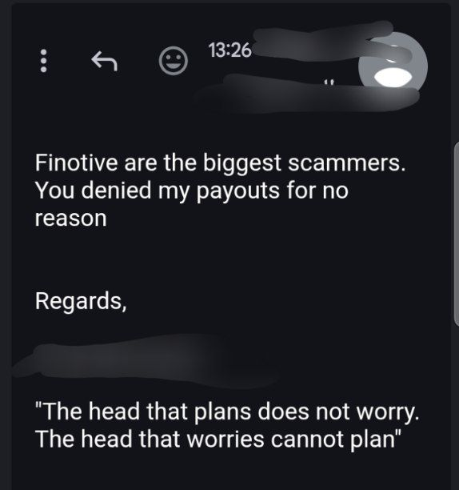
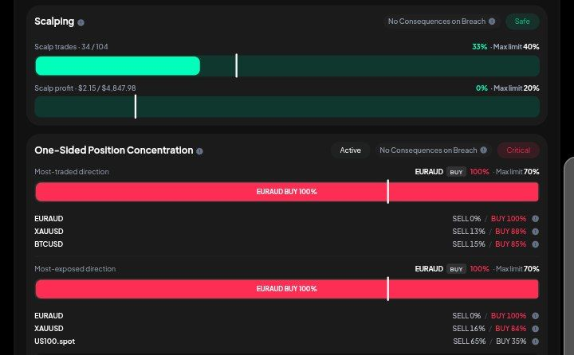
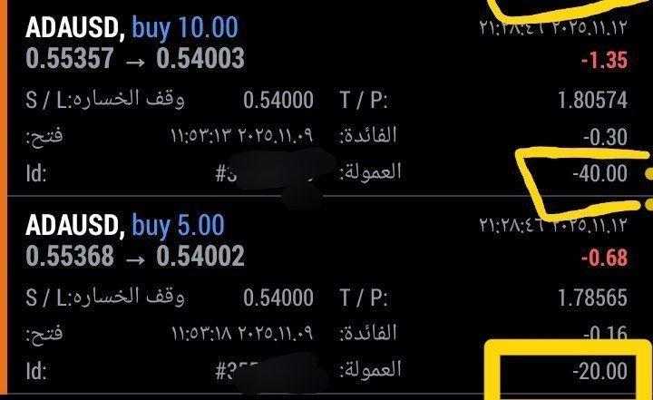
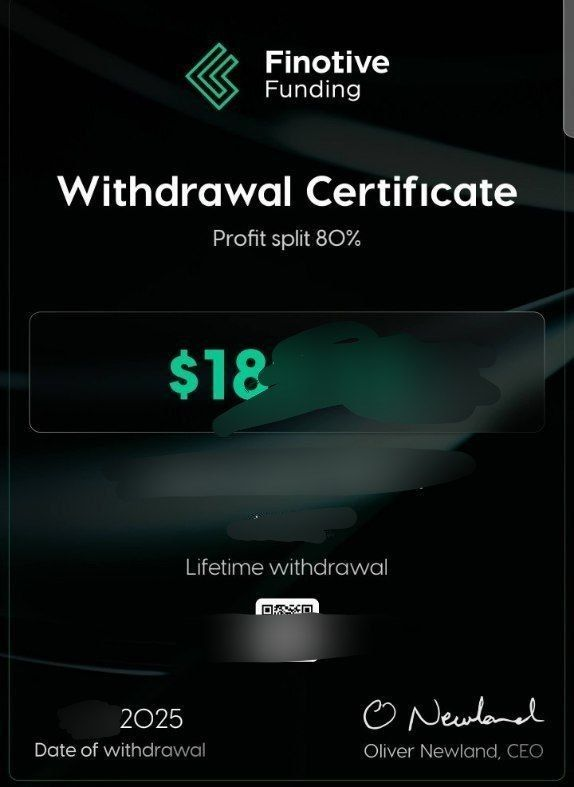

Finotive Funding: Technical Audit & Risk Assessment
1. Aggregated Community Reports (Unverified)
Recently, several users within trading communities have shared communications alleging operational issues at Finotive Funding. According to screenshots provided by these users, there are claims that a recent mass email exposed client addresses by utilizing the CC field instead of BCC. Furthermore, we have aggregated multiple anecdotal reports from users claiming their payouts were denied due to 'HFT usage'. Please note that ForexMax cannot independently verify the backend trading data of these individual accounts, and we present these community submissions for informational purposes.


Disclaimer: This image is a redacted community submission/email report. The claims and terminology (e.g., 'scam') represent the user's personal opinion and do not reflect the official legal stance or absolute factual claims of ForexMax Research.
2. Execution & Tech Reality
Our independent testing of the base MT5 execution shows stable performance for standard forex pairs. However, users should factor the commission structure into their risk models. In our simulated environment, we observed a commission equivalent to $80 on a 20-lot ADAUSD trade.

3. The Notional Volume Mechanism
Traders should also be aware of the 'Notional Volume' mechanism embedded in the firm's trading rules. Finotive calculates the maximum position limit based on the total notional value of open trades, rather than a standard lot-size cap. This technical parameter requires strict monitoring by the trader, as exceeding it—especially during volatile market conditions—can trigger an automatic account breach.
4. Historical Context & Editorial Opinion
Our historical data confirms that Finotive Funding has successfully processed payouts in the past. However, the recent influx of community complaints regarding data privacy and payout consistency introduces a new layer of uncertainty. Our editorial stance, based on the intersection of our technical observations and the influx of negative community sentiment, is to exercise caution. We classify the current environment as Elevated Risk from an editorial perspective. We strongly encourage traders to conduct their own due diligence, review the official terms, and monitor the firm's responses to these community allegations.
